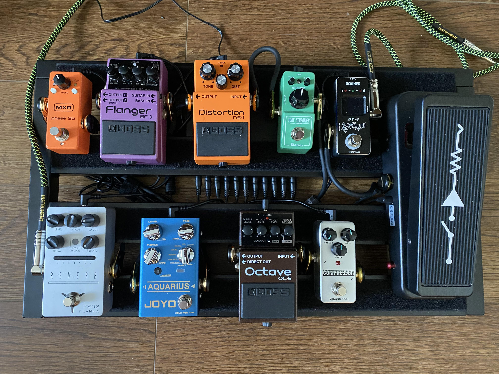

Se você está começando a explorar o mundo dos pedais de guitarra, este site é o lugar certo para você. Ele traz apenas o que é realmente essencial saber antes de comprar seu pedal, sem complicações ou informações desnecessárias. Desde os tipos de efeitos, como overdrive, delay e chorus, até dicas sobre combinações e ajustes básicos, você vai encontrar tudo de forma clara e objetiva. Perfeito para guitarristas que querem fazer escolhas conscientes e montar seu som sem perder tempo com detalhes confusos.

Pedais que aumentam a saturação e a distorção do sinal da guitarra.
Aumenta o volume ou empurra o amplificador para mais saturação.
Distorção suave e natural.
Distorção mais intensa e agressiva.
Som extremamente saturado e característico.
Pedais que alteram o sinal original criando movimento e textura.
dá a sensação de várias guitarras tocando juntas.
cria um efeito metálico e espacial
produz uma varredura suave nas frequências.
varia o volume de forma rítmica.
varia levemente a afinação.